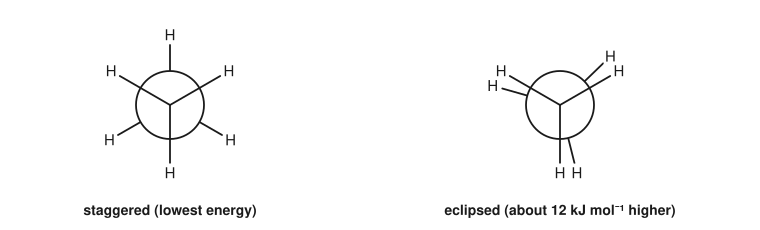
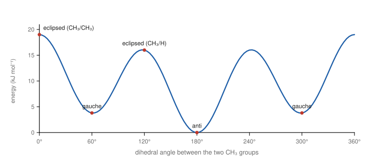
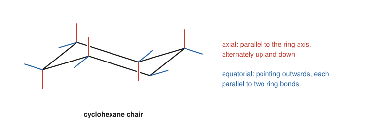
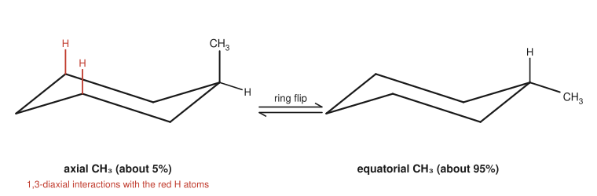

Chapter 6: Alkanes and Conformations¶
Saturated hydrocarbons, their shapes and their radical reactions
Alkanes are the simplest organic compounds: only carbon and hydrogen, joined by single bonds. They make up natural gas and most of petroleum, and they are the hydrocarbon backbone on which the functional groups of later chapters sit. Alkanes are not very reactive, but they are far from dull. Rotation about their single bonds gives them shapes, called conformations, whose energies explain much about the behaviour of larger molecules, and the chair shape of cyclohexane is one of the most important structures in chemistry and biology. This chapter covers the properties and sources of alkanes, the conformations of chains and rings, and the two reactions alkanes do undergo: combustion and radical halogenation.
Learning outcomes
By the end of this chapter you should be able to:
- relate the physical properties of alkanes to their size and shape;
- draw Newman projections and explain the energy differences between staggered and eclipsed conformations;
- describe the conformations of butane and the origin of torsional and steric strain;
- explain ring strain in small rings and the absence of strain in the cyclohexane chair;
- draw the chair conformation of cyclohexane with axial and equatorial bonds, and predict the preferred conformation of substituted cyclohexanes;
- write the radical chain mechanism for the halogenation of an alkane and predict product ratios from relative reactivities.
6.1 Alkanes: structure, sources and properties¶
Alkanes are saturated hydrocarbons: each carbon is sp³ hybridised and bonded to four other atoms by single bonds, the most hydrogen a carbon skeleton can carry. Open-chain alkanes have the formula CₙH₂ₙ₊₂; cycloalkanes with one ring have CₙH₂ₙ. Members of a series that differ by one CH₂ unit form a homologous series, with gradually changing physical properties and very similar chemistry.
The main source of alkanes is petroleum (crude oil) and natural gas. Natural gas is mostly methane, with some ethane, propane and butane. Crude oil is a complex mixture separated in a refinery by fractional distillation into fractions of different boiling ranges: gases (C₁ to C₄), petrol or gasoline (roughly C₅ to C₁₀), kerosene, diesel and fuel oils, and the residue used for lubricants and bitumen. Larger molecules are broken into smaller, more useful ones by cracking, which also produces the alkenes used to make polymers (Chapter 15).
Physical properties¶
Alkanes are non-polar. The only forces between their molecules are London dispersion forces (Section 1.8), so:
- Boiling points rise with chain length, roughly 20 to 30 °C for each extra CH₂ in the middle of the series. At room temperature, C₁ to C₄ are gases, C₅ to about C₁₇ are liquids, and larger alkanes are waxy solids.
- Branching lowers the boiling point, because a compact, nearly spherical molecule has less surface in contact with its neighbours. Pentane boils at 36 °C, 2-methylbutane at 28 °C and 2,2-dimethylpropane at about 10 °C.
- Alkanes are insoluble in water and less dense than water, which is why oil floats on the sea. They dissolve in other non-polar solvents and are themselves used as solvents (hexane, heptane).
| Alkane | Formula | Boiling point (°C) | State at 25 °C |
|---|---|---|---|
| methane | CH₄ | −162 | gas |
| ethane | C₂H₆ | −89 | gas |
| propane | C₃H₈ | −42 | gas |
| butane | C₄H₁₀ | −1 | gas |
| pentane | C₅H₁₂ | 36 | liquid |
| hexane | C₆H₁₄ | 69 | liquid |
| octane | C₈H₁₈ | 126 | liquid |
| decane | C₁₀H₂₂ | 174 | liquid |
Table 6.1. Boiling points of some unbranched alkanes.
6.2 Conformations of ethane¶
Rotation about a C–C single bond is easy (Section 1.5). As one methyl group of ethane turns relative to the other, the molecule passes through an infinite number of shapes. These shapes, which interconvert by rotation about single bonds without breaking any bond, are conformations (or conformers).
The best way to see them is a Newman projection: look straight down the C–C bond. The front carbon is a point where three bonds meet; the back carbon is a circle, with its three bonds coming out from behind the edge.

Two conformations are special:
- In the staggered conformation the C–H bonds on the two carbons are as far apart as possible, with a dihedral angle of 60° between neighbouring bonds on the front and back carbons. This is the conformation of lowest energy.
- In the eclipsed conformation each C–H bond on the back carbon lies directly behind one on the front, with a dihedral angle of 0°. This is the conformation of highest energy.
The eclipsed conformation is about 12 kJ mol⁻¹ higher in energy than the staggered one. The extra energy is called torsional strain. It comes mainly from the repulsion between the electron pairs of bonds that are lined up with each other, and partly from the loss of a favourable interaction between filled C–H bonding orbitals and empty antibonding orbitals that is possible only in the staggered arrangement. A barrier of 12 kJ mol⁻¹ is small compared with the thermal energy available at room temperature: ethane rotates through its conformations many millions of times each second. At any instant most molecules are close to the staggered conformation.
Key idea
Conformations are not isomers. They interconvert rapidly at room temperature and cannot be separated. But the populations of conformations, and the energy differences between them, control the shapes of molecules and often the outcome of their reactions.
6.3 Conformations of butane¶
Butane has a more interesting energy profile, because the groups on C2 and C3 are not all the same. Looking along the C2–C3 bond, each carbon carries one methyl group and two hydrogens. The key conformations are named by the dihedral angle between the two methyl groups:
- Anti (180°): the methyl groups are as far apart as possible. This is the most stable conformation.
- Gauche (60°): the methyl groups are staggered but next to each other. They are close enough to crowd each other, raising the energy by about 3.8 kJ mol⁻¹. This repulsion between groups that are forced too close together is called steric strain.
- Eclipsed, CH₃ with H (120°): about 16 kJ mol⁻¹ above anti, from torsional strain plus some steric strain.
- Fully eclipsed, CH₃ with CH₃ (0°): the highest point, about 19 kJ mol⁻¹ above anti, from torsional strain and severe steric strain between the methyl groups.

At room temperature about two-thirds of butane molecules are anti and one-third gauche. For longer chains, the preference for anti arrangements is why unbranched alkane chains in crystals and in the hydrocarbon tails of fats adopt the extended zigzag shape that we draw in skeletal formulas.
Example 6.1: The energy of a conformation
Using these approximate costs: H/H eclipsing 4.0 kJ mol⁻¹, CH₃/H eclipsing 6.0 kJ mol⁻¹, CH₃/CH₃ eclipsing 11 kJ mol⁻¹, and gauche CH₃/CH₃ 3.8 kJ mol⁻¹, estimate the energy of the two eclipsed conformations of butane relative to anti.
At 120°, the eclipsed pairs are CH₃/H, CH₃/H and H/H: 6.0 + 6.0 + 4.0 = 16 kJ mol⁻¹.
At 0°, the pairs are CH₃/CH₃, H/H and H/H: 11 + 4.0 + 4.0 = 19 kJ mol⁻¹.
Both agree with Figure 6.2. The same bookkeeping (adding up the cost of each interaction) is used to estimate the energies of more complicated conformations.
6.4 Cycloalkanes and ring strain¶
In a ring, the carbon atoms cannot rotate freely, and the C–C–C bond angles are constrained by the ring size. A flat ring with \(n\) atoms would have internal angles of 60° (cyclopropane), 90° (cyclobutane), 108° (cyclopentane) and 120° (cyclohexane). Since sp³ carbon prefers 109.5°, small rings suffer angle strain. Rings also suffer torsional strain if their C–H bonds are forced to eclipse.
The total ring strain can be measured from heats of combustion. Each CH₂ group in a strain-free chain releases about 659 kJ mol⁻¹ when burned; any extra energy released per CH₂ by a ring compound is strain energy that is released when the ring is destroyed.
| Cycloalkane | Heat of combustion per CH₂ (kJ mol⁻¹) | Total strain energy (kJ mol⁻¹) |
|---|---|---|
| cyclopropane | 697 | about 115 |
| cyclobutane | 686 | about 110 |
| cyclopentane | 664 | about 26 |
| cyclohexane | 659 | about 0 |
Table 6.2. Ring strain from heats of combustion.
- Cyclopropane must be flat, with 60° angles and all its C–H bonds eclipsed. Its C–C bonds are bent, with poor orbital overlap, and they are weak: cyclopropane opens more easily than other alkanes.
- Cyclobutane puckers slightly (one carbon bends out of the plane), which relieves some torsional strain at the cost of a little more angle strain.
- Cyclopentane adopts an envelope shape, with one carbon out of the plane, and has little strain.
- Cyclohexane is essentially strain-free, because it is not flat at all.
6.5 The chair conformation of cyclohexane¶
Cyclohexane adopts a puckered chair conformation, so called for its resemblance to a reclining chair. In the chair every C–C–C angle is close to the tetrahedral 109.5°, and every C–H bond is perfectly staggered with its neighbours. The chair therefore has neither angle strain nor torsional strain. Six-membered rings are extremely common in nature, in sugars, steroids and many drugs, partly for this reason.
Axial and equatorial positions¶
Each carbon of the chair has two hydrogens, which point in different directions:
- One is axial: parallel to the axis of the ring, pointing straight up or straight down. The axial positions alternate up and down around the ring.
- The other is equatorial: pointing outwards from the ring, roughly along its "equator", slightly up on carbons whose axial bond points down and slightly down on carbons whose axial bond points up.

How to draw a chair
- Draw two parallel lines sloping slightly downwards, offset from each other.
- Join their ends to make the two tips: the left tip pointing down, the right tip pointing up.
- Draw the axial bonds vertically: up at the "up" carbons (the right tip and every second carbon from it), down at the others.
- Draw each equatorial bond parallel to the ring bonds one bond away, pointing outwards.
Practise until you can draw a neat chair in ten seconds; it is worth it.
Ring flipping¶
The chair is not rigid. By rotating about its C–C bonds, it can turn into a second chair, passing through higher-energy shapes on the way (the half-chair and the twist-boat; the boat conformation, about 30 kJ mol⁻¹ above the chair, suffers eclipsing along its sides and crowding between the two "flagpole" hydrogens). This ring flip has a barrier of about 45 kJ mol⁻¹ and happens roughly a hundred thousand times a second at room temperature. In a ring flip, every axial position becomes equatorial and every equatorial position becomes axial, while up stays up and down stays down.
Substituted cyclohexanes¶
In cyclohexane itself the two chairs are identical. In a substituted cyclohexane they are not. In methylcyclohexane, one chair has the methyl group axial and the other has it equatorial.

An axial substituent is crowded by the two axial hydrogens on the same face of the ring, on carbons 3 and 5 relative to it. These 1,3-diaxial interactions are the same kind of steric strain as the gauche interaction in butane. For a methyl group the equatorial conformer is favoured by about 7.3 kJ mol⁻¹, enough for about 95% of methylcyclohexane molecules to have the methyl group equatorial at room temperature. Larger groups have larger preferences. A tert-butyl group is so strongly equatorial that it effectively locks the ring in one chair.
Example 6.2: The more stable conformation of a disubstituted cyclohexane
Which is more stable, cis- or trans-1,4-dimethylcyclohexane? Draw the preferred chair of each.
In the chair, C1 and C4 are carbons of opposite type: if C1 has its axial bond pointing down, C4 has its axial bond pointing up. An equatorial bond points slightly to the face opposite its carbon's axial bond, so the two equatorial bonds at C1 and C4 point to opposite faces. Hence a trans arrangement allows both groups to be equatorial, while a cis arrangement forces one group axial and one equatorial.
- trans: one chair is diequatorial, the other diaxial. The diequatorial chair is strongly preferred.
- cis: both chairs have one axial and one equatorial methyl; they are equal in energy.
So trans-1,4-dimethylcyclohexane is more stable, by roughly the cost of one axial methyl group (about 7 kJ mol⁻¹).
Caution: cis/trans is not axial/equatorial
Cis and trans describe whether two groups are on the same face or opposite faces of the ring; they never change. Axial and equatorial describe positions in one particular chair; they swap on ring flipping. Whether a cis compound can be diequatorial depends on the positions: for 1,2 and 1,4 substitution trans can be diequatorial, but for 1,3 substitution it is the cis isomer that can be diequatorial.
6.6 Reactions of alkanes¶
Alkanes are sometimes called paraffins, from the Latin for "little affinity". They do not react with acids, bases, most oxidising agents or nucleophiles at room temperature, because their C–C and C–H bonds are strong and nearly non-polar, offering no site for polar attack. They have two important reactions.
Combustion¶
Alkanes burn in excess oxygen to give carbon dioxide and water, releasing a great deal of energy:
This is why alkanes are our main fuels. In a limited supply of oxygen, combustion is incomplete and produces carbon monoxide, a toxic gas, and soot (carbon). Combustion of fossil fuels is also the main source of the carbon dioxide that is driving climate change, a point taken up in Chapter 16.
Radical halogenation¶
When a mixture of an alkane and chlorine or bromine is exposed to ultraviolet light or heated, a hydrogen is replaced by a halogen:
The reaction does not occur in the dark at room temperature. It goes by a radical chain mechanism with three stages.
Initiation. Light splits a chlorine molecule homolytically (the Cl–Cl bond, 242 kJ mol⁻¹, is much weaker than C–H):
- Cl–Cl → 2 Cl•
Propagation. Two steps repeat in a cycle. Each consumes one radical and produces another, so a single initiation can lead to thousands of product molecules:
- Cl• + H–CH₃ → H–Cl + •CH₃
- •CH₃ + Cl–Cl → CH₃–Cl + Cl•
Add the two propagation steps and the radicals cancel, leaving the overall equation CH₄ + Cl₂ → CH₃Cl + HCl.
Termination. The chain stops when two radicals meet and combine, which is rare because radicals are present at very low concentration:
- Cl• + Cl• → Cl₂
- •CH₃ + Cl• → CH₃Cl
- •CH₃ + •CH₃ → CH₃CH₃
Each step uses fish-hook arrows: in the first propagation step, one electron from the C–H bond pairs with the unpaired electron of Cl• to form H–Cl, and the other electron stays on carbon. The small amount of ethane formed by termination is evidence for the methyl radical.
Caution: mixtures of products
Radical halogenation is hard to control. The product CH₃Cl can react further to give CH₂Cl₂, CHCl₃ and CCl₄, and alkanes with different kinds of hydrogen give mixtures of isomers. It is useful industrially and for simple molecules, but rarely the method of choice in the laboratory.
Selectivity: chlorination versus bromination¶
In propane there are six primary hydrogens (on the two CH₃ groups) and two secondary hydrogens (on the CH₂). If every hydrogen were equally reactive, chlorination would give 1-chloropropane and 2-chloropropane in the ratio 6 : 2. In fact it gives about 45% 1-chloropropane and 55% 2-chloropropane. Secondary hydrogens are more reactive, because breaking a secondary C–H bond gives a more stable secondary radical (Section 5.6).
At room temperature, the relative reactivity per hydrogen for chlorination is roughly tertiary : secondary : primary ≈ 5 : 4 : 1. Bromination is far more selective: the reactivity ratio for tertiary to primary hydrogens is of the order of a thousand to one or more, and bromination of propane gives about 97% 2-bromopropane.
The difference comes from the energetics of the first propagation step. Removal of a hydrogen by Cl• is exothermic, with an early transition state that resembles the reactants and is little affected by the stability of the radical being formed. Removal by Br• is endothermic, with a late transition state that resembles the alkyl radical, so the differences in radical stability are strongly felt (the Hammond postulate, Section 5.7).
Example 6.3: Predicting a product ratio
Predict the ratio of the two monochlorination products of 2-methylpropane, (CH₃)₃CH, using relative reactivities tertiary : primary = 5 : 1.
There are 9 primary hydrogens (three CH₃ groups) and 1 tertiary hydrogen.
- Primary: 9 × 1 = 9 → 1-chloro-2-methylpropane.
- Tertiary: 1 × 5 = 5 → 2-chloro-2-methylpropane.
Fraction of tertiary product = 5/14 = 36%; primary product 64%. The large number of primary hydrogens outweighs their lower reactivity. With bromine, the tertiary product would dominate almost completely.
6.7 Summary¶
Summary
- Alkanes (CₙH₂ₙ₊₂) are saturated, non-polar hydrocarbons from petroleum and natural gas. Boiling point rises with chain length and falls with branching.
- Conformations interconvert by rotation about single bonds. In ethane, staggered is about 12 kJ mol⁻¹ more stable than eclipsed (torsional strain).
- In butane: anti is most stable, gauche is 3.8 kJ mol⁻¹ higher (steric strain), and the fully eclipsed form is highest.
- Small rings have angle and torsional strain; cyclohexane in the chair conformation is strain-free.
- The chair has six axial and six equatorial positions; a ring flip swaps them. Substituents prefer equatorial positions to avoid 1,3-diaxial interactions.
- Alkanes burn to CO₂ and H₂O and undergo radical halogenation by initiation, propagation and termination.
- Reactivity of C–H bonds towards radicals is 3° > 2° > 1°; bromination is much more selective than chlorination.
6.8 Exercises¶
Exercise 1
Arrange in order of increasing boiling point: hexane, 2,2-dimethylbutane, pentane, 2-methylpentane. Explain.
Answer
Pentane (36 °C) < 2,2-dimethylbutane (about 50 °C) < 2-methylpentane (about 60 °C) < hexane (69 °C). Pentane has the fewest carbons and the weakest dispersion forces. The three C₆ isomers have the same formula; the more branched and compact the molecule, the smaller its surface area and the lower its boiling point.
Exercise 2
Draw Newman projections, looking along the C–C bond, of the staggered and eclipsed conformations of chloroethane, CH₃CH₂Cl. Why is the energy difference slightly larger than in ethane?
Answer
Front carbon (C1): three H. Back carbon (C2): two H and one Cl. In the staggered conformation the Cl lies between two hydrogens of the front carbon; in the eclipsed conformation it lies behind one of them. The barrier is a little larger than in ethane (about 15 kJ mol⁻¹ rather than 12) because eclipsing an H with the larger Cl atom adds some steric strain to the torsional strain.
Exercise 3
Using Figure 6.2, sketch Newman projections of butane at dihedral angles of 0°, 60°, 120° and 180°, and label each as anti, gauche or eclipsed.
Answer
Looking along C2–C3, each carbon carries CH₃, H, H. At 180° the two CH₃ groups point in opposite directions (anti). At 60° they are staggered and adjacent (gauche). At 120° each CH₃ eclipses an H (eclipsed). At 0° the CH₃ groups eclipse each other (fully eclipsed, the highest energy).
Exercise 4
Explain why cyclopropane reacts with bromine (opening the ring to give 1,3-dibromopropane) under conditions where propane and cyclohexane do not react.
Answer
Cyclopropane has about 115 kJ mol⁻¹ of ring strain: its C–C–C angles are forced to 60° instead of 109.5°, its bonds are bent with poor overlap, and all its C–H bonds are eclipsed. Opening the ring releases this strain, so the C–C bonds of cyclopropane are weaker and more reactive than those of an unstrained alkane. Cyclohexane is essentially strain-free and behaves like an open-chain alkane.
Exercise 5
For each compound, draw both chair conformations and say which is preferred: (a) tert-butylcyclohexane; (b) cis-1,2-dimethylcyclohexane; (c) trans-1,2-dimethylcyclohexane.
Answer
(a) One chair has the tert-butyl group equatorial, the other axial. The axial form suffers severe 1,3-diaxial interactions; the equatorial chair is overwhelmingly preferred, and the ring is effectively locked.
(b) cis-1,2: in either chair one methyl is axial and the other equatorial. The two chairs have equal energy.
(c) trans-1,2: one chair is diequatorial, the other diaxial. The diequatorial chair is strongly preferred (there is a gauche interaction between the two adjacent equatorial methyls, but this is much less costly than two axial methyl groups).
Exercise 6
Write the initiation, two propagation steps and two termination steps for the radical monobromination of ethane.
Answer
Initiation: Br₂ → 2 Br• (light or heat).
Propagation: Br• + CH₃CH₃ → HBr + CH₃CH₂•; then CH₃CH₂• + Br₂ → CH₃CH₂Br + Br•.
Termination (any two): Br• + Br• → Br₂; CH₃CH₂• + Br• → CH₃CH₂Br; 2 CH₃CH₂• → CH₃CH₂CH₂CH₃ (butane).
Exercise 7
Butane is chlorinated in light. Using the relative reactivity per hydrogen secondary : primary = 4 : 1, predict the percentages of 1-chlorobutane and 2-chlorobutane. Is 2-chlorobutane formed as a single enantiomer?
Answer
Butane has 6 primary H (two CH₃) and 4 secondary H (two CH₂). Primary: 6 × 1 = 6. Secondary: 4 × 4 = 16. 1-Chlorobutane = 6/22 = 27%; 2-chlorobutane = 16/22 = 73%. (Experimentally about 30 : 70.)
2-Chlorobutane has a stereocentre at C2. The intermediate secondary radical is planar, and chlorine can attack either face equally, so 2-chlorobutane is formed as a racemic mixture.
6.9 Quiz¶
Check your understanding of alkanes and conformations
Exercise 1
In the most stable conformation of butane, the two methyl groups are
- eclipsed
- gauche
- anti
- axial
Answer
anti
Exercise 2
The energy difference between eclipsed and staggered ethane is mainly due to
- angle strain
- torsional strain
- hydrogen bonding
- ring strain
Answer
torsional strain
Exercise 3
Which cycloalkane is essentially free of ring strain?
- cyclopropane
- cyclobutane
- cyclopentane
- cyclohexane
Answer
cyclohexane
Exercise 4
When a cyclohexane chair flips, an axial substituent becomes
- equatorial
- axial on the other face
- a cis substituent
- a boat
Answer
equatorial
Exercise 5
How many axial hydrogens does a cyclohexane chair have?
Answer
6 / six
Exercise 6
In the propagation step Cl• + CH₄ →, the products are
- CH₃Cl + H•
- HCl + •CH₃
- CH₃• + Cl₂
- CH₂Cl₂ + H₂
Answer
HCl + •CH₃
Exercise 7
Bromination of 2-methylpropane gives mainly
- 1-bromo-2-methylpropane
- 2-bromo-2-methylpropane
- a 9 to 1 mixture of the two
- no reaction
Answer
2-bromo-2-methylpropane
Bromination is highly selective for the tertiary C-H bond, which gives the most stable radical.